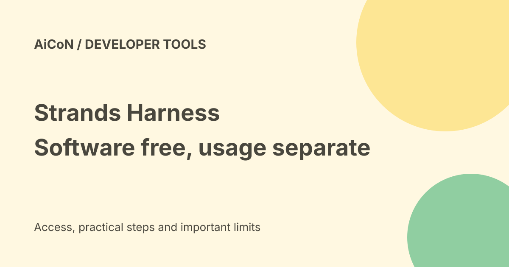

Strands Harness: open agent software, model costs and tool risks
Strands Harness is a ready-assembled developer agent from the Strands Agents project. It bundles model access, tools and session features instead of making you assemble every part. Its source license is free, but cloud model calls and infrastructure can still cost money.

What is a harness?
A harness is the software around an AI model: it manages messages, tools, context and continued work. Strands presents a general-purpose assembled agent, separate from its lower-level SDK and the Strands Decider model covered elsewhere.
The official launch on 21 September 2026 says the harness uses Python or TypeScript and is released under Apache 2.0. That license applies to the checked project, not automatically to every model, plugin or third-party dependency you add.
Install routes
The current quickstart names Python 3.10 or newer for the Python package. It lists pip install strands-harness and npm install @strands-agents/harness for TypeScript. The optional CLI uses npm install -g @strands-agents/cli.
A package installation is not a complete production setup. You still need a permitted model provider, credentials when required, supported dependencies and a safe place to run tools. Follow the current official quickstart in an isolated project; do not install unfamiliar packages as an administrator just to avoid an error.
Models and costs
The docs describe providers including Amazon Bedrock, Anthropic, OpenAI and Google, with Ollama for a locally served model. They say Bedrock is the default and that model choice depends on the configuration. Read current provider access and rates before making a call.
Cloud tokens, tool services and hosting can be billed separately. A local Ollama model avoids a cloud model API bill for that route, but still needs a suitable machine, storage, energy and the model's own license. Local model selection does not stop a web tool or plugin sending information elsewhere.
The 28% claim is a benchmark result
The project reports 28% lower token costs across six benchmarks using the same Claude or GPT models, with nearly equal scores. It describes its own EC2-based test setup. This is not an independently tested saving for every task.
Compare final quality, retries, output tokens, tools and review time, not only a headline percentage. A cheaper wrong result is not a completed job.
Sessions and private files
The quickstart says sessions are enabled by default and written under ./.agent/sessions. A session lets later runs resume a conversation. Long-term memory is a separate feature.
Those saved files can contain task details or model responses. Review access, backups and deletion before using sensitive code or customer information. Never commit keys or private session records to a public repository.
A careful first run
- Read the official repository, license and quickstart.
- Create an isolated directory with harmless test files and a backup.
- Select the exact model and set its billing controls.
- Review enabled file, shell and external tools; remove what the test does not need.
- Choose a small task with a clear result, without private data.
- Inspect actual file changes, commands, session files and billed usage.
- Review effects before sending, spending or deploying anything.
No package was installed, provider key connected or billed task run for this guide. Code snippets here identify official install packages, not a tested deployment walkthrough.
India fit
This is a developer tool, not a free consumer app. Provider availability, payments and data terms can differ in India. Use your organisation's approved model and environment for workplace material.
Frequently asked questions
Is the model free with the harness?
No cloud allowance is established by its source license.
Does it run only on AWS?
The docs describe several providers and local Ollama.
Was the 28% saving reproduced here?
No.
What changed since the earlier post?
This guide separates software licensing from provider costs, adds default session storage and tool risks, and labels the project's savings as a benchmark claim.
Sources: Official launch · Harness guide · Current quickstart · Official source repository. Checked 8 October 2026.